Team & Partners
Meet the creators, researchers, and institutions forming the backbone of ICIDN.
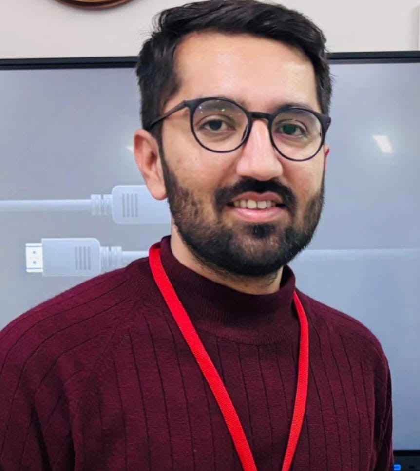
Mehulkumar Desai
Co-Founder
Research Scholar, Department of Humanities and Social Sciences, IIT Dhanbad
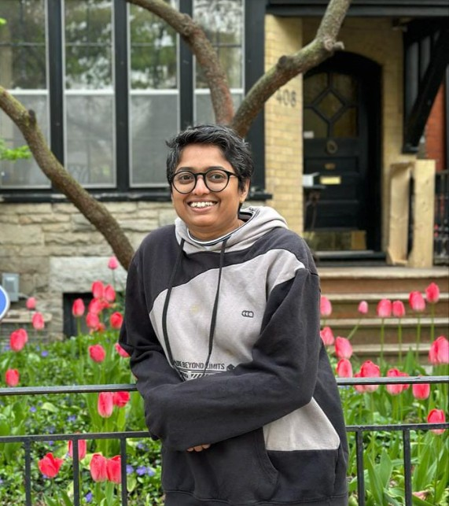
Dr. Shanmugapriya T
Co-Founder
Assistant Professor, Department of Humanities and Social Sciences, IIT Dhanbad
Global Outreach Affiliates
Collaborators and affiliated artists supporting ICIDN’s international reach.
Andrew Phelps
Carlos Scolari

Claire Carroll
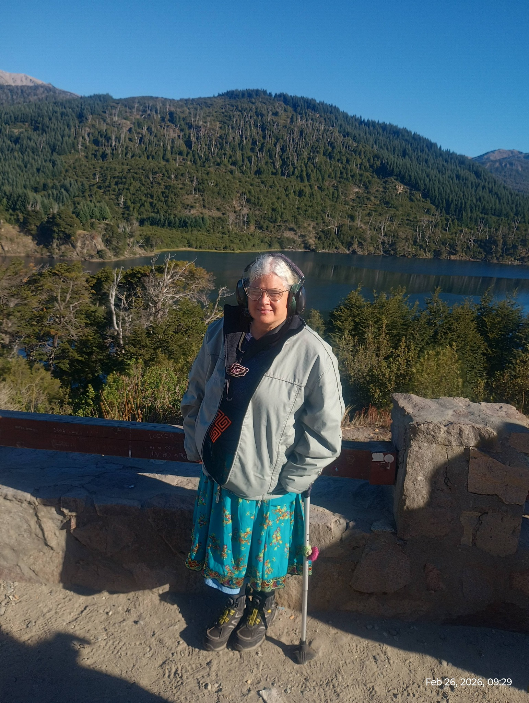
Deena Larsen
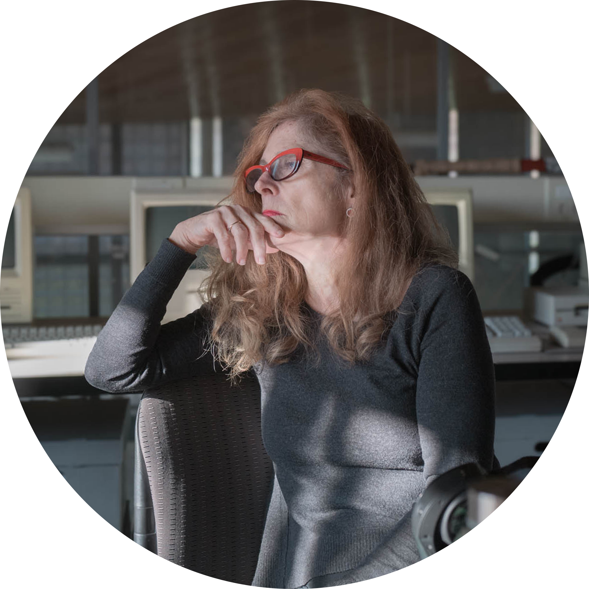
Dene Grigar
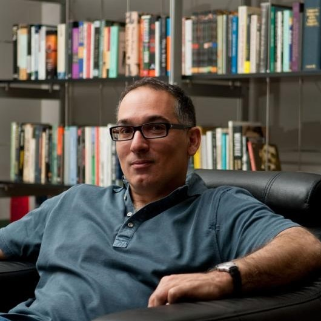
Joseph Tabbi
Judy Malloy
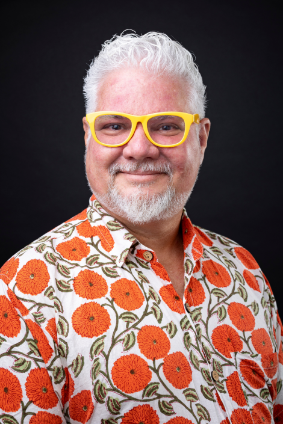
Leonardo Flores

Lev Manovich
María Cecilia Reyes
María Goicoechea
María Mencía
Michael Joyce
Nick Montfort
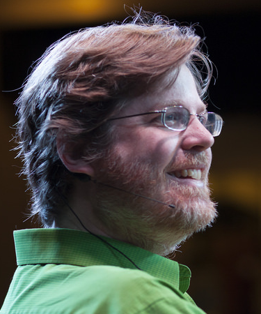
Noah-Wardrip Fruin
Pamella Lach
Richard Holeton
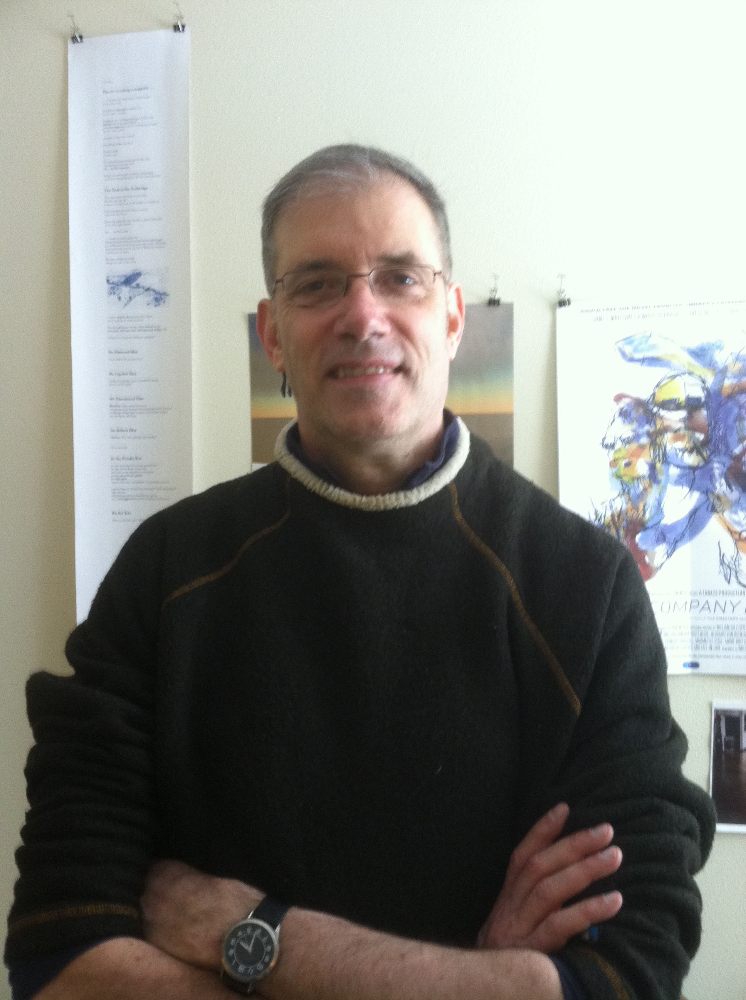
Rob Wittig

Scott Rettberg
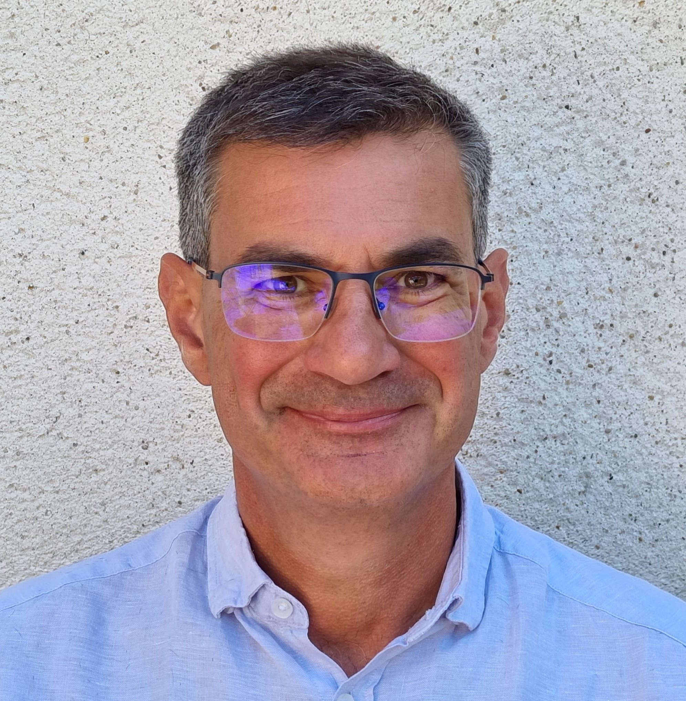
Serge Bouchardon
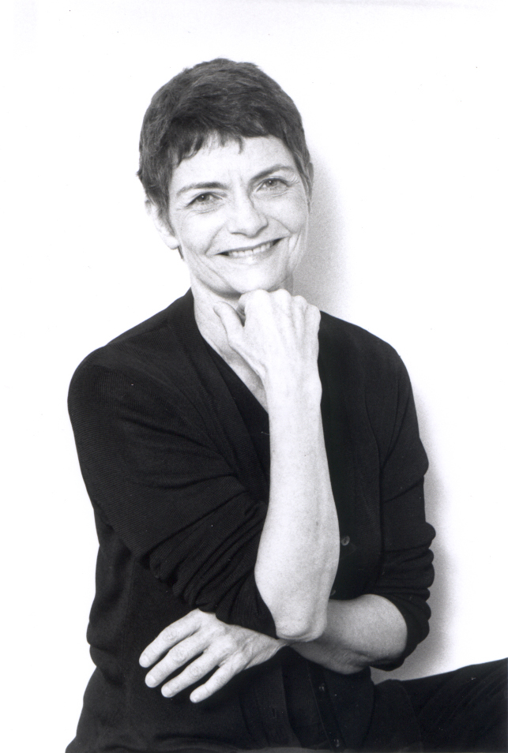
Stephanie Strickland
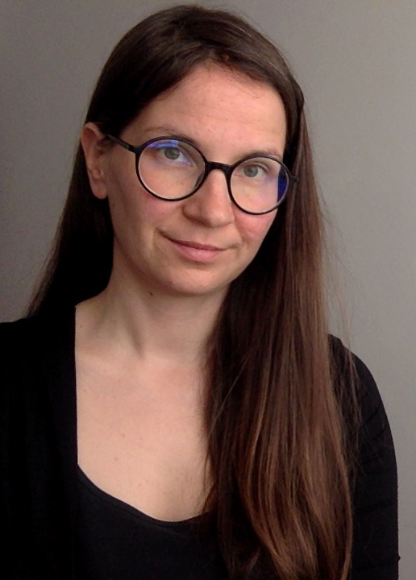
Terhi Marttila